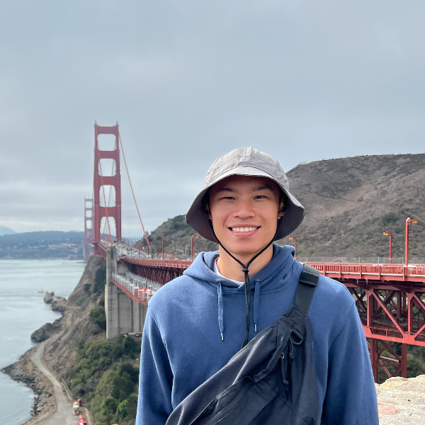
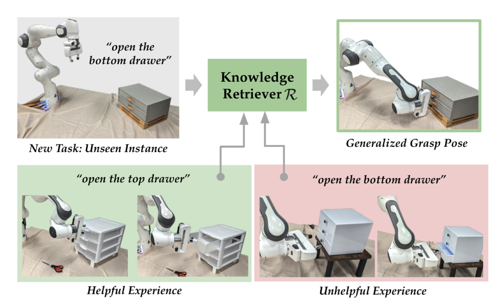
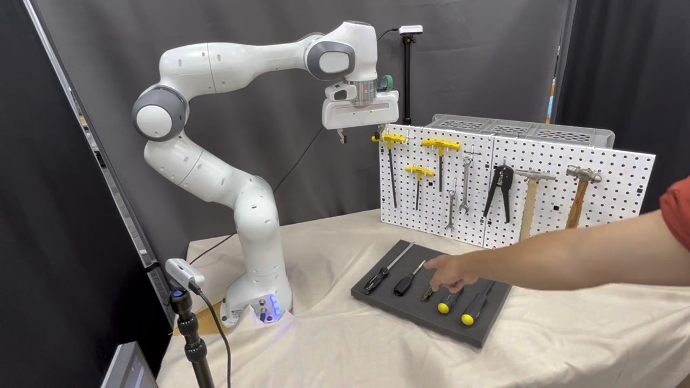
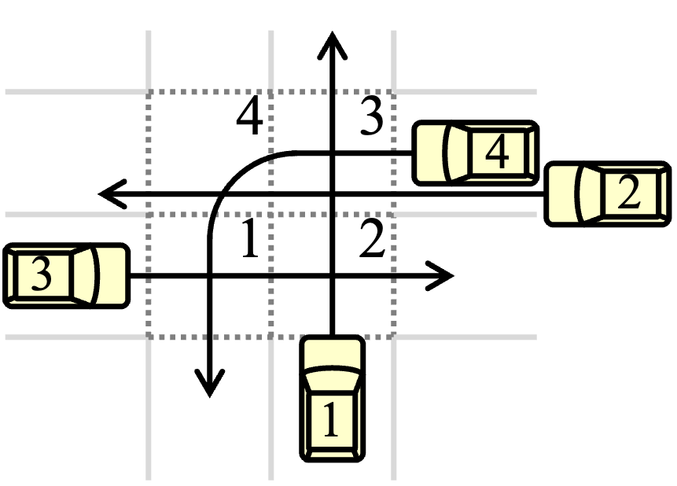
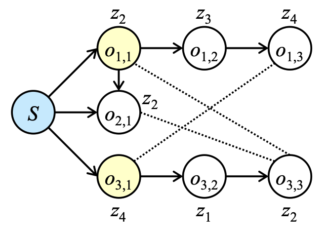

|
Li-Heng Lin I am a second year master student in the computer science department at Stanford University and a member of ILIAD advised by Dorsa Sadigh. I completed my undergraduate degree at National Taiwan University where I worked with Professors Chung-Wei Lin and Hsuan-Tien Lin. Email / CV / Google Scholar / Github / LinkedIn |
 |
{kind=link}
ResearchI'm boardly interesteed in machine learning and robotics, especially when human factors are considered in the loop. |
|

|
Distilling and Retrieving Generalizable Knowledge for Robot Manipulation via Language Corrections
Lihan Zha, Yuchen Cui, Li-Heng Lin, Minae Kwon, Montserrat Gonzalez Arenas, Andy Zeng, Fei Xia, Dorsa Sadigh International Conference on Robotics and Automation (ICRA) 2024 paper / website Propose a LLM-based system that responds to language feedback, distills knowledge from corrections, and retrieves relevant past knowledge. |
|

|
Gesture-Informed Robot Assistance via Foundation Models
Li-Heng Lin, Yuchen Cui, Yilun Hao, Fei Xia, Dorsa Sadigh Conference on Robot Learning (CoRL) 2023 paper / website Enable robots to understand human gestures and generate corresponding plans using LLMs. |
|

|
Graph-Based Deadlock Analysis and Prevention for Robust Intelligent Intersection Management
Kai-En Lin, Kuan-Chun Wang, Yu-Heng Chen, Li-Heng Lin, Chung-Wei Lin, Iris Hui-Ru Jiang ACM Transactions on Cyber-Physical Systems Refine the graph-based intersection model and propose a robustness-aware greedy scheduling algorithm. |
|

|
Reinforcement-Learning-Based Job-Shop Scheduling for Intelligent Intersection Management
Shao-Ching Huang, Kai-En Lin, Cheng-Yen Kuo, Li-Heng Lin, Muhammed O. Sayin, Chung-Wei Lin Design, Automation & Test in Europe Conference & Exhibition (DATE) 2023 Apply reinforcement learning to solve the scheduling problem on graph-based intersection models. |
|
|
Deadlock Resolution for Intelligent Intersection Management with Changeable Trajectories
Li-Heng Lin, Kuan-Chun Wang, Ying-Hua Lee, Kai-En Lin, Chung-Wei Lin, Iris Hui-Ru Jiang IEEE Intelligent Vehicles Symposium (IV) 2022 Ensure deadlock free by proposing a protection mechanism based on limiting the number of vehicles. The whole system reduces vehicle wait time by 52% on average compared to traditional traffic light systems. |
Industry |

|
Summer 2021 Developed an Android app "Braille Image Translator" that takes in an image of a braille device and outputs its corresponding text. |
|
Website template is adapted from here. |